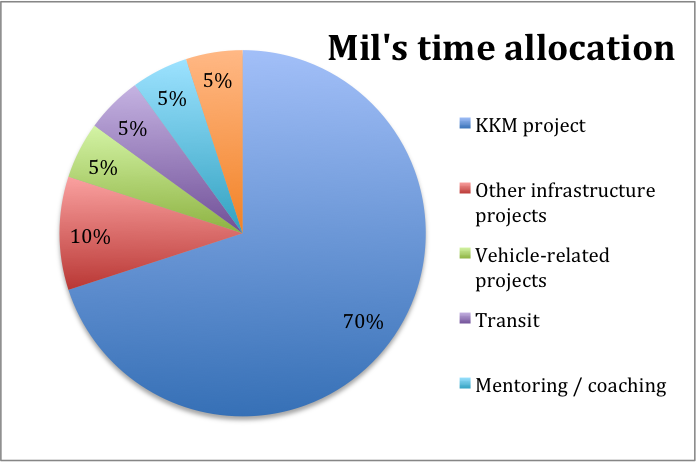

These are my latest check-ins
Mil's Check-in 10/April/2014
Mil's time allocation
This is how I've been spending my time lately
Brainstorms
- Interaction between stakeholders for design of new office
- Train of thought: For the design of the new office there are going to be many parties involved (GPs, Mil, design committee, design firm, final users) and there needs to be a system in place to determine prioritization of decisions and assure an effective and efficient design process, especially with the urgency that this project will have.
- Questions to guide discussion:
- How are we going to define the design committee? What are we looking for with this?
- How are we going to determine who gets to decide over different design aspects?
- Should we be providing direction to the design firm? Or do we want to make this a very open conversation?
- How can we make sure that everyone is going to be satisfied with the final product?
- Vehicle Maintenance and repair solution
- Train of thought: Our vehicles are a big pain for the QoL of expats. We are also spending a significant amount of money on these vehicles and its benefits are not really visible. We have the opportunity to significantly improve the system used for keeping these vehicles functional. How should we go about it?
- Questions to guide discussion:
- We have to opportunity to partner up with RfH for outsourcing vehicle maintenance and repairs. According to my analysis we could save more than 20% of what we are currently spending and also dedicate a lot less time to it. What could be the drawbacks of this partnership?
- If we decide to move forward with this opportunity, how should we manage this relationship?
- If we don’t decide to move forward with it, what are some ideas that could be implemented in order to improve our current MO?